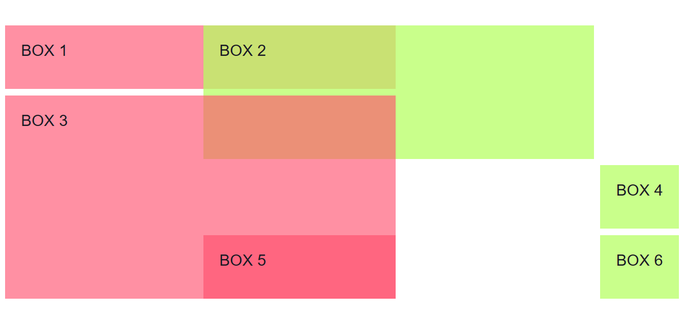
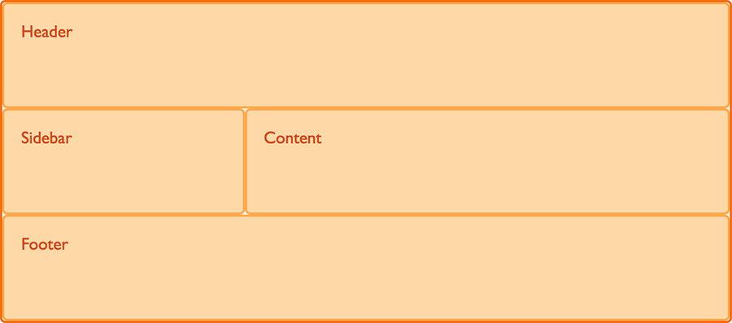

CSS Grid Layout
What is Grid?

A grid is an intersecting set of horizontal and vertical lines – one set defining columns, and the other, rows.
- Useful for two-dimensional align.
- Grid layout enables to align elements into columns and rows.
- Box alignment.
- Easier work with complicated layout.
- Grid container's child elements could position themselves so they actually overlap and layer.
What exactly grids can do?
Grid is 2-dimensional system, meaning it can handle both columns and rows, unlike flex-box which is largely a 1-dimensional system.

Grid container's child elements could position themselves so they actually overlap and layer.
Grid lines

.box-1 {
grid-column: 1 / 2;
grid-row: 1/3;
}
.box-2 {
grid-column: 2 / 6;
grid-row: 1/3;
}
.box-3 {
grid-column: 1/2;
grid-row: 3/6;
}
.box-4 {
grid-column: 2 / 4;
grid-row: 3/6;
}
.box-5 {
grid-column: 4 / 5;
grid-row: 3/6;
}
.box-6 {
grid-column: 5 / 6;
grid-row: 3/6;
}
.box-1 {
grid-column: 1 / 2;
grid-row: 1/3;
}
.box-2 {
grid-column: 2 / 6;
grid-row: 1/3;
}
.box-3 {
grid-column: 1/2;
grid-row: 3/6;
}
.box-4 {
grid-column: 2 / 3;
grid-row: 3/6;
}
.box-5 {
grid-column: 3 / 5;
grid-row: 1/6;
}
.box-6 {
grid-column: 4 / 6;
grid-row: 3/6;
}
You can choose what you would like to name your area. For example, if I wish to create the layout shown below I can identify four main areas: a header, a footer, a sidebar, the main content.

.header {
grid-area: hd;
}
.footer {
grid-area: ft;
}
.content {
grid-area: main;
}
.sidebar {
grid-area: sd;
}
Having defined these names create a layout. This time, instead of placing an items using line numbers specified on the items themselves, we create the whole layout on the grid container.
.wrapper {
display: grid;
grid-template-columns: repeat(9, 1fr);
grid-auto-rows: minmax(100px, auto);
grid-template-areas:
"hd hd hd hd hd hd hd hd hd"
"sd sd sd main main main main main main"
"ft ft ft ft ft ft ft ft ft";
}
You can leave grid cells empty with this method of layout. To leave a cell empty use the full stop character, '.'.
If I want to only display the footer directly under the main content I would need to leave the three cells underneath the sidebar empty.